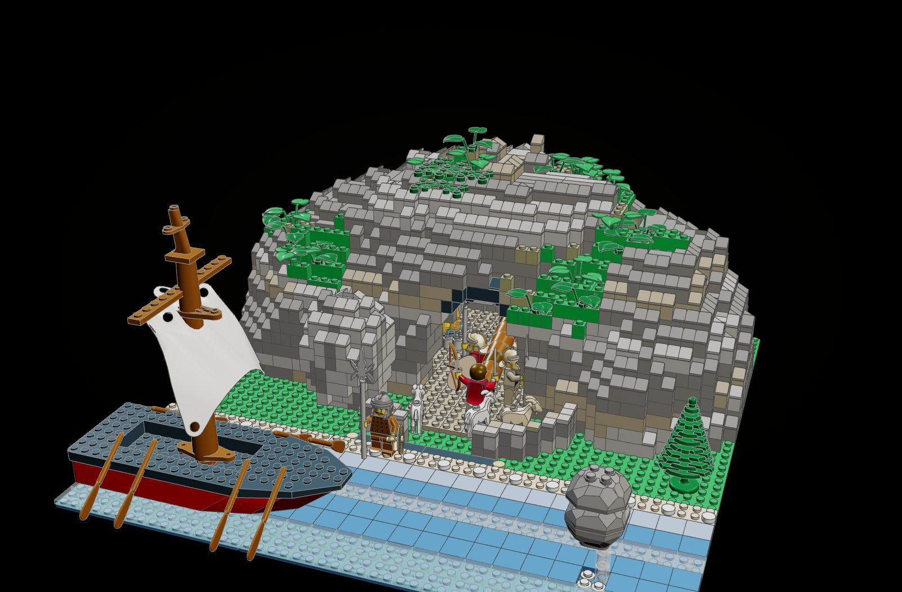
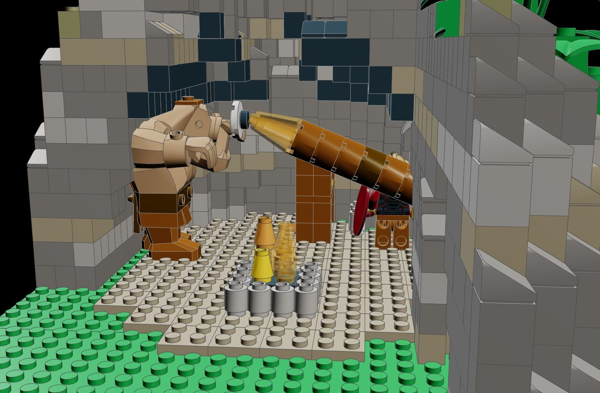
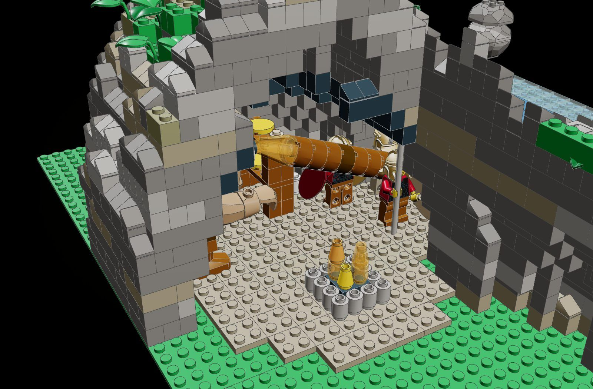
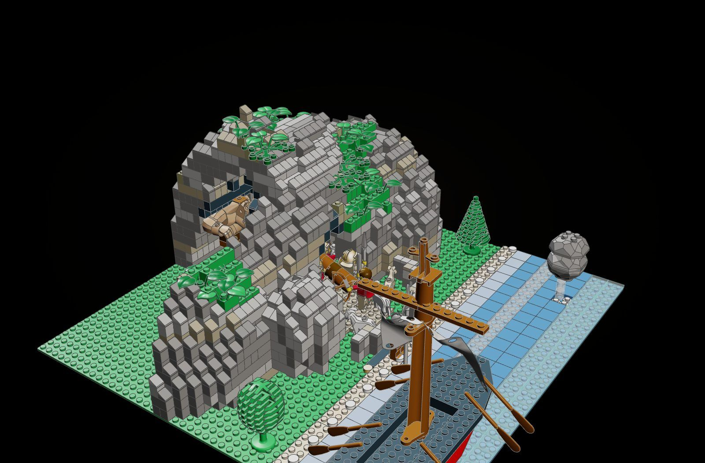
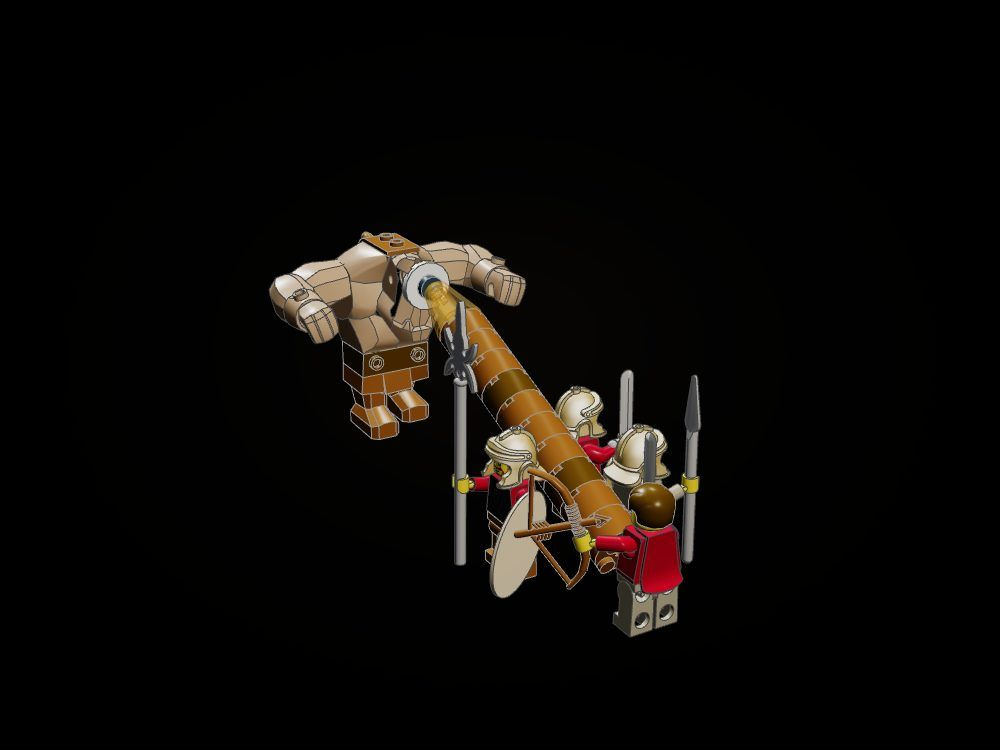
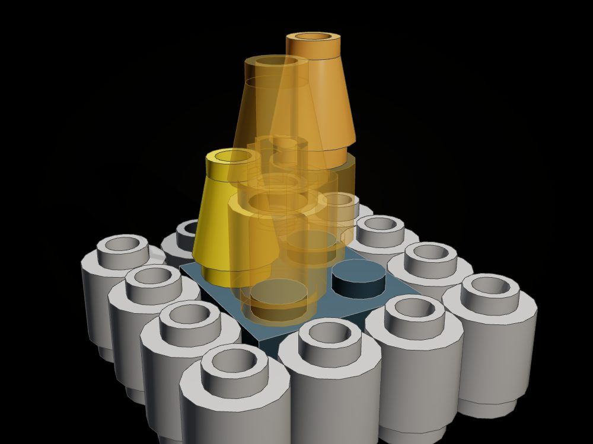
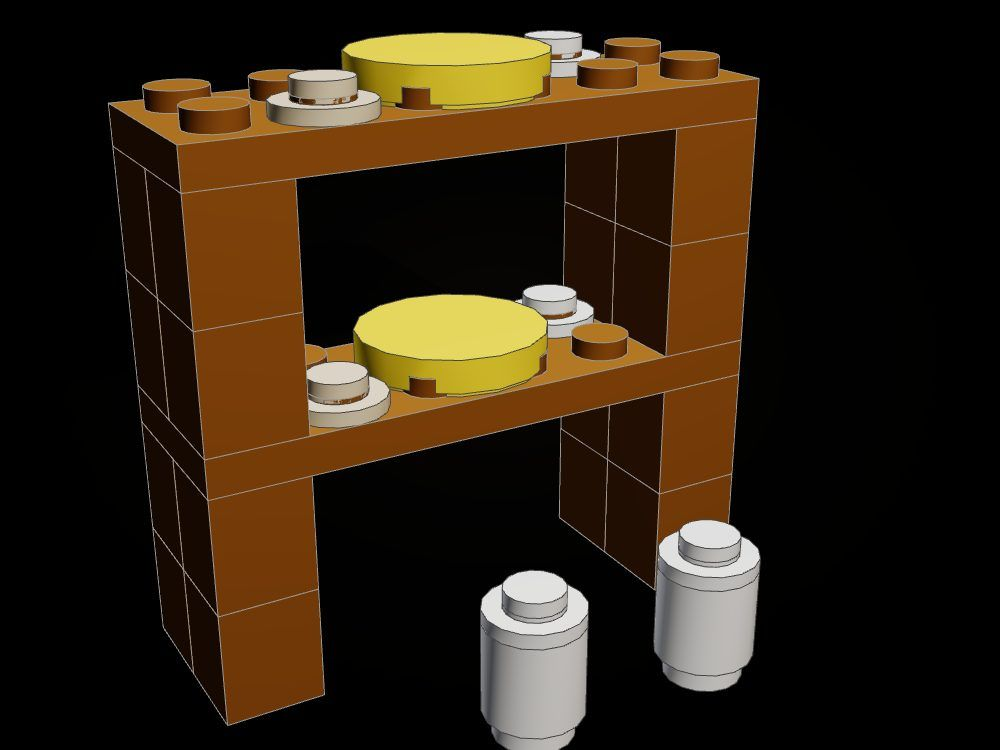
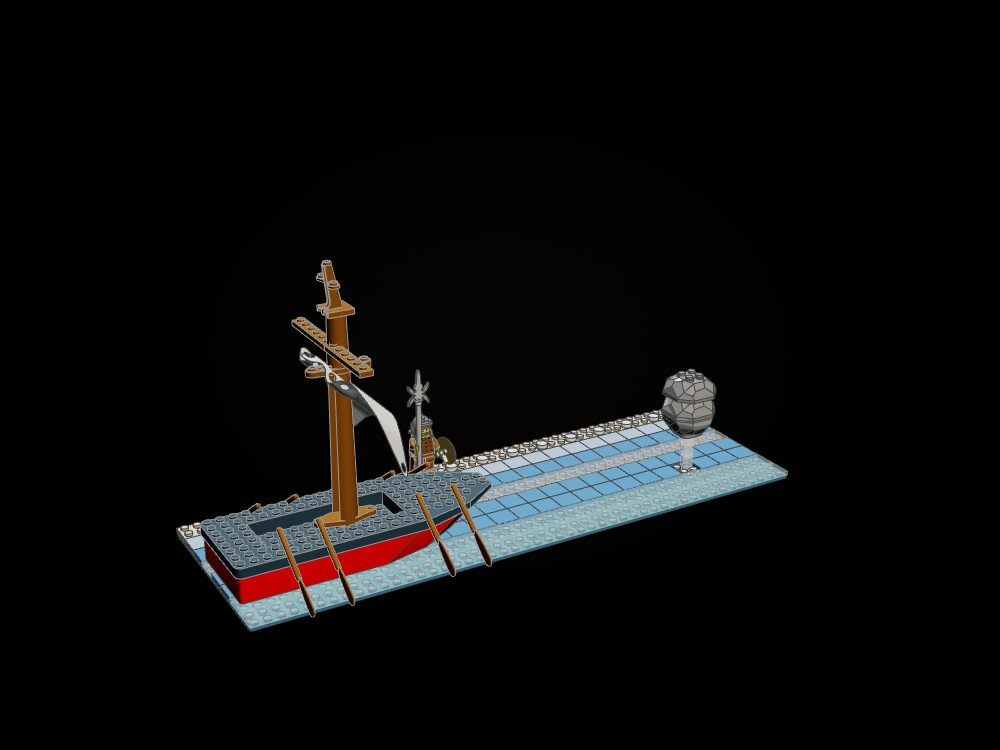
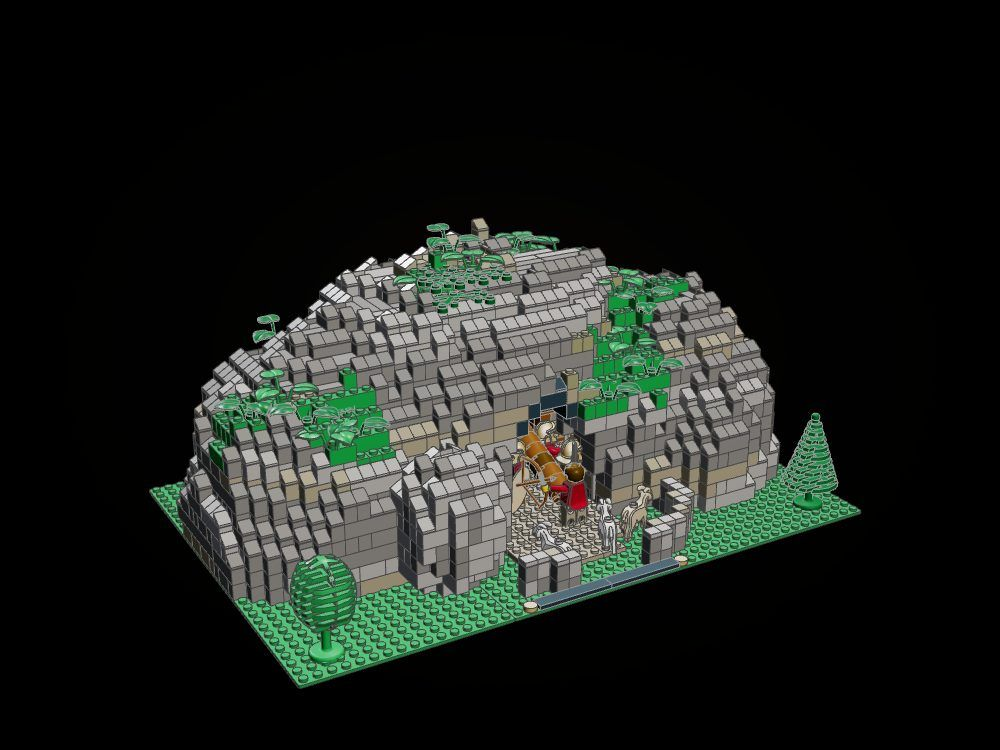

The Cave of the Cyclops
The night Odysseus blinds the giant, in one model you can hold: the headland and its cave, the stake driven into the single eye, and on the shore below the black ship that will carry the survivors away. The headland and the shore are two builds that each stand alone and join into one diorama.
"They took the olive stake, sharp at the point, and thrust it into his eye, and I, leaning on it from above, twirled it round, as a man bores a ship's timber with a drill." (Odyssey IX)

The moment
Inside, it is the height of the story. Polyphemus sits asleep against the back wall, drunk on Maron's wine, the ivy-wood bowl fallen by him. Odysseus's men drive the olive stake into his eye, its point glowing orange from the fire. Outside is the quiet before it: the rams left in the yard that evening, the laurels over the mouth, and the door-stone "that twenty-two waggons could not draw" rolled aside.


The play feature

Both states were settled together: supports that only held the flank lift away with it, and the rock under the door-stone stays. Next for this kit: the door-stone on a track of tiles so it can be slid shut across the mouth.
How it is finished
- No field of bare studs on the rock. Every top the sky sees is finished: 1 x 1 cheese slopes running off every edge, tiles on the flat.
- Beds of stone. Dark bluish and light grey in patches four studs across, so the courses merge into long bricks, with beds of dark tan running through like strata.
- Moss that grows. Green and olive in patches on the ledges, with plants rising from its studs and laurels over the mouth.
- Soot. The vault over the fire is black.
- Water of tiles. Blue baseplates under 2 x 2 tiles of blue, medium blue, trans light blue and clear, white foam along the sand.
- A nameplate. Black tiles with a gold stud at each end, at the front of the headland's base.
The builds inside the build

The giant and the stake
A big-figure Cyclops with his single eye, the stake of round bricks with its glowing cone, Odysseus at its butt and three companions along it. It is the first bag of the instructions, so the story starts in the builder's hands.

The hearth
Round stones ringing a bed of embers, flames in trans-orange and yellow: the fire the point was hardened in.

Racks loaded with cheeses
Two shelves on posts, round cheeses in yellow, bowls of curd, and the pails "brimming with whey".

The black ship and the thrown rock
The supporting build, as the marlin is to the Old Man's boat: the galley afloat on the tiles with its sail set, and the boulder the blinded giant hurled after it, caught on a clear column of spray the moment it strikes the water.

The main model
On its own, the headland is the cave with its yard, trees, the rams and the nameplate, 48 x 32 studs.